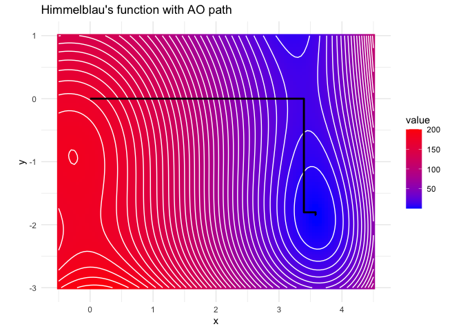

The ao package implements alternating optimization (AO) in R.
Why?
AO is an iterative process that optimizes a function by alternately performing restricted optimization over parameter subsets. Instead of solving one joint optimization problem, AO breaks it into smaller sub-problems. This can make optimization feasible when joint optimization is too difficult.
The AO process implemented in ao can be
viewed as a generalization of joint optimization,
used for minimization and maximization problems with custom parameter partitions,
randomized by changing the parameter partition randomly after each iteration,
run in multiple processes for different initial values, parameter partitions, and/or base optimizers (which run in parallel if the future.apply package is installed and a parallel plan is set).
See the package vignette for more details.
How?
You can install the released package version from CRAN with:
install.packages("ao")Then load the package with library("ao"). Here is a simple example of alternating minimization of Himmelblau’s function:
himmelblau <- function(x) (x[1]^2 + x[2] - 11)^2 + (x[1] + x[2]^2 - 7)^2The resulting optimization path is shown below.

It is obtained with:
ao(f = himmelblau, initial = c(0, 0))
#> $estimate
#> [1] 3.584427 -1.848124
#>
#> $value
#> [1] 9.15386e-11
#>
#> $details
#> iteration value p1 p2 b1 b2 seconds
#> 1 0 1.700000e+02 0.000000 0.000000 0 0 0.000000000
#> 2 1 1.327270e+01 3.395691 0.000000 1 0 0.005705118
#> 3 1 1.743664e+00 3.395691 -1.803183 0 1 0.002934933
#> 4 2 2.847290e-02 3.581412 -1.803183 1 0 0.002274990
#> 5 2 4.687468e-04 3.581412 -1.847412 0 1 0.001963139
#> 6 3 7.368057e-06 3.584381 -1.847412 1 0 0.001662970
#> 7 3 1.164202e-07 3.584381 -1.848115 0 1 0.017327070
#> 8 4 1.893311e-09 3.584427 -1.848115 1 0 0.001352072
#> 9 4 9.153860e-11 3.584427 -1.848124 0 1 0.001142979
#>
#> $seconds
#> [1] 0.03436327
#>
#> $stopping_reason
#> [1] "change in function value between 1 iteration is < 1e-06"Contact?
If you have questions, find a bug, or need a feature, file an issue on GitHub.